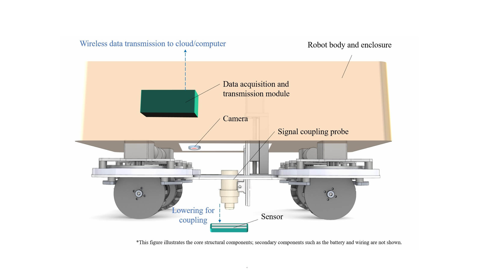
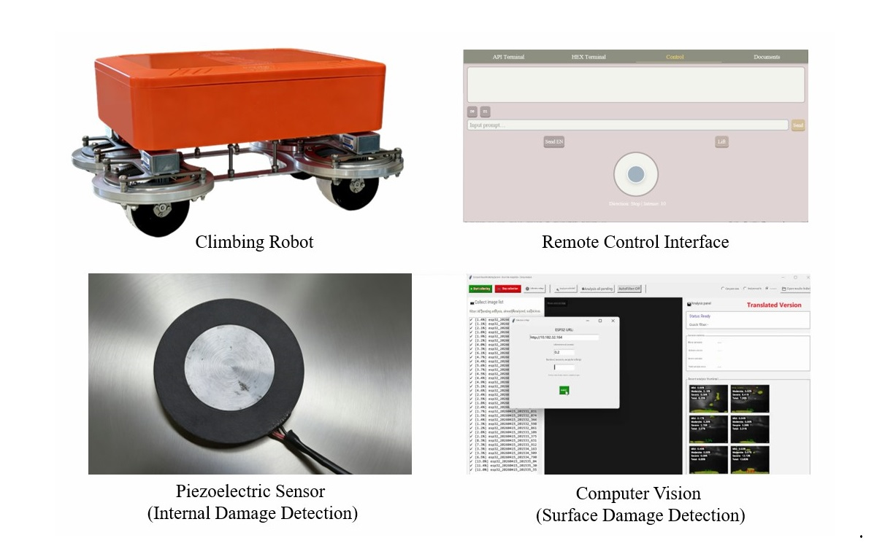
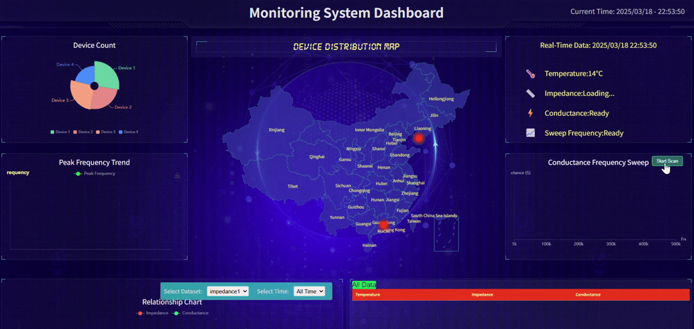
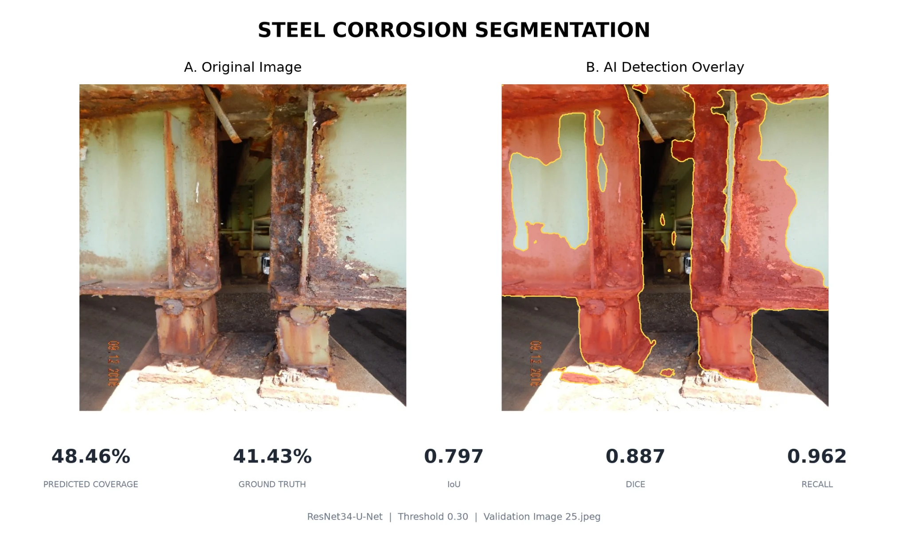

Integrated Robotics
Magnetic locomotion, sensing hardware, wireless communication, and remote-control components assembled into a climbing inspection prototype.
A dual-modal inspection robot integrating magnetic locomotion, internal damage sensing, and AI-powered corrosion segmentation. Founded and led a nine-member team from system development through prototype validation.

Prototype climbing performance test.
Magnetic locomotion, sensing hardware, wireless communication, and remote-control components assembled into a climbing inspection prototype.
ResNet34-U-Net segmentation identifies corroded regions at the pixel level to support corrosion-area measurement.


ResNet34-U-Net predictions on labeled validation images. The gallery compares original steel images with corrosion masks across different conditions.
